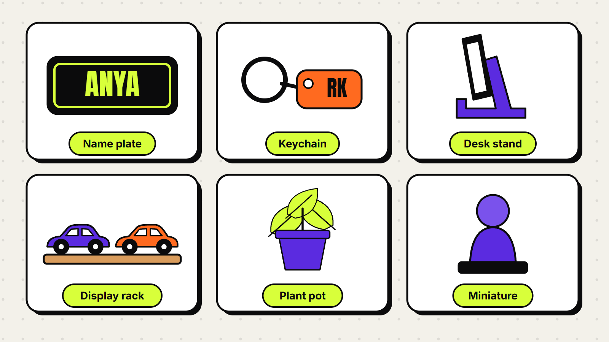
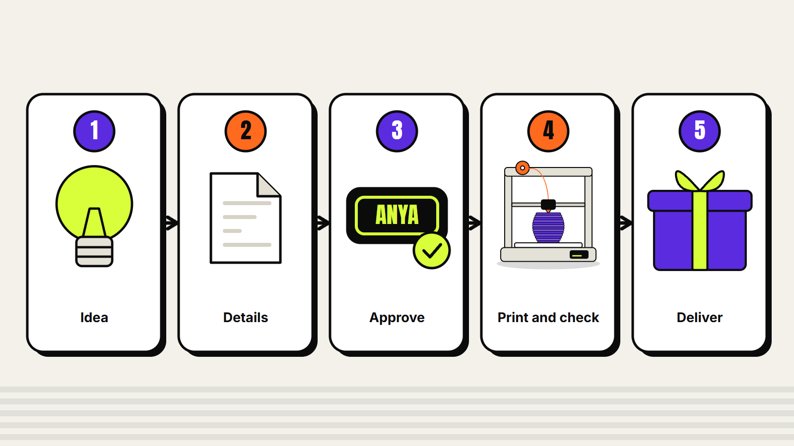

A personalised gift says someone thought about the person, not only the occasion. 3D printing makes that practical, because each piece can carry a different name, shape, or colour without special tooling. This guide shares ideas by recipient, explains what to prepare, and shows how to avoid last-minute trouble.
The best gift fits their life. Ask what they use every day, what they collect, and what annoys them. A tidy desk accessory for someone who works from home beats a decoration they have no place for.

| For | Idea | Personal detail |
|---|---|---|
| A colleague | Desk name plate or pen holder | Name and role |
| A collector | Display stand sized to their models | Colour and slot count |
| A badminton player | Racket wall mount | Number of slots |
| A gamer | Controller and headset stand | Favourite colour |
| A plant lover | Planter with liner | Size to fit their pot |
| A new home | Door or wall sign | Family name and house number |
| A student | Keychain or desk organiser | Initials |
Characters, team logos, and brand designs usually belong to someone else. We print original designs and files you have permission to use, and we do not print licensed characters without written permission. Original artwork and your own photos are a safer starting point. Read licences and 3D printing.

The quote shows a lead time in working days. Add a margin for festival periods and courier delays.
Read every letter, aloud if it helps. Check numbers, dates, and capital letters. Look at the size in relation to something familiar. Once a personalised piece is printed, it cannot be resold, and these orders are paid online rather than on delivery.
Several copies with different names work well for teams, classes, and events. Send a single spreadsheet of names to avoid errors, ask for one sample first, and add your GSTIN for a business invoice. See business and bulk orders.
Printed gifts are not toys for small children unless made and certified for that purpose. Small parts can be a choking hazard. Printed items are also not food-safe, so avoid cups and plates.
A simple box with soft paper protects the piece and feels considered. Include a short care note: keep away from heat, and wipe with a soft cloth.
Tip: If the date is close, choose a ready-made item and add a handwritten note. A thoughtful gift on time beats a custom one that arrives late.
Personalisation does not need to be large. Initials under a pen holder, a date on the back of a stand, or a colour chosen to match a favourite room can be enough. A gift that is useful and quietly personal tends to stay in use, while a very busy design may feel hard to place. If you are unsure what the person would like, choose a neutral colour, keep the name small, and make sure the object solves something real for them. Include your own handwritten note, since that part cannot be printed.
As early as you can. A quote shows the lead time in working days, and you should add room for your own approval, delivery, and festival rush.
Some designs can turn a high-contrast picture into a raised or layered image, with limited detail. Send the photo and ask what is realistic before deciding.
Pick gifts that do not need to fit anything, such as a name plate or keychain. For stands and holders, ask quietly for a measurement or choose an adjustable design.
Personalised pieces are made for one person, so check the spelling and details with care. If something arrives damaged or differs from what you approved, report it with photos. See the returns page for terms.
Compact, sturdy shapes travel best. Thin arms, tall points, and very delicate resin details need more packing and care.
Yes. List each name and colour clearly, ideally in one document, so every piece can be checked against it.
A surprise is lovely, but a wrong size or misspelt nickname can spoil it. Check details with someone close to the recipient, choose designs that forgive small unknowns, and keep your order message safe until the parcel arrives. When you cannot confirm something important, a simpler design is the wiser choice.
Browse the ready-made range, learn how to design a name plate, or send your idea through the quote form.